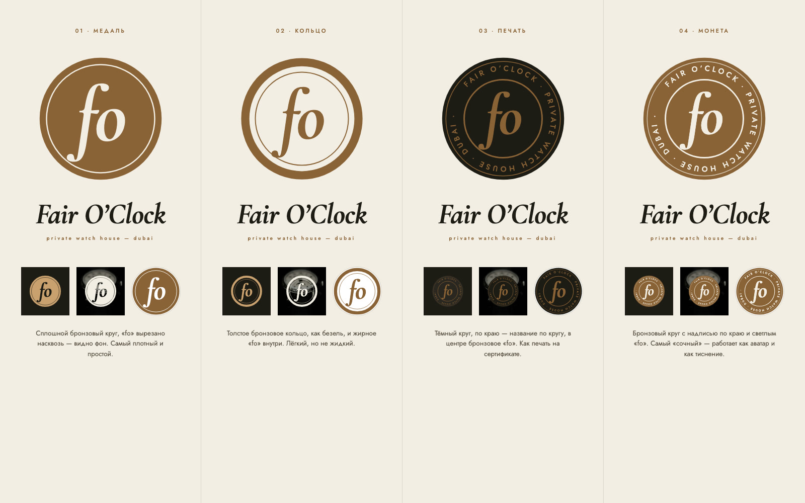
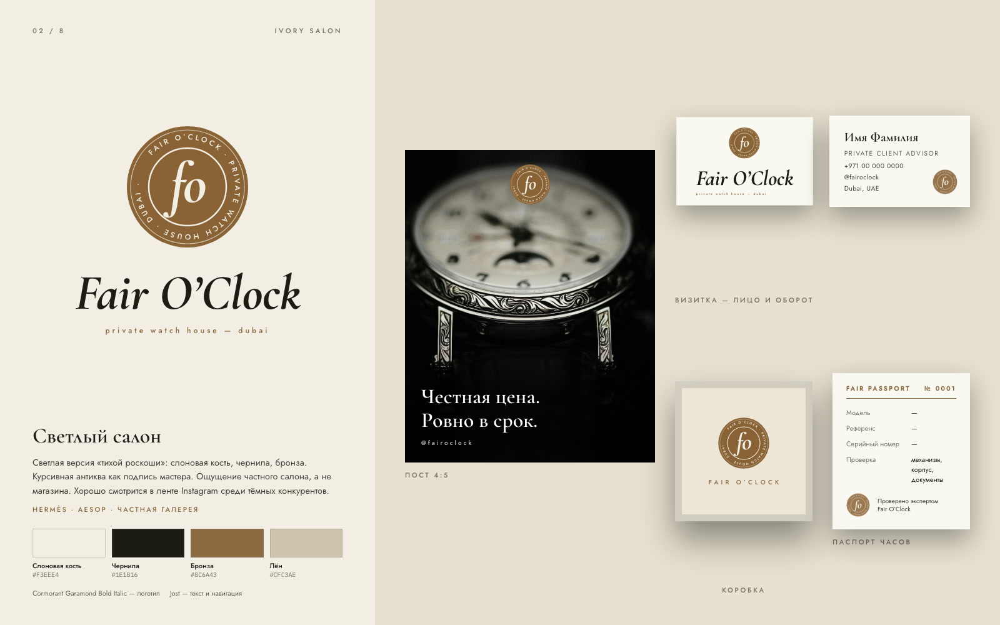

Светлый салон — круглый жирный знак
Четыре круглых знака: медаль, кольцо, печать и монета. Под каждым — как знак смотрится на тёмном фоне, на фото и аватаром в Instagram. На доске стоит «Монета».
Четыре знака

Доска с «Монетой»
